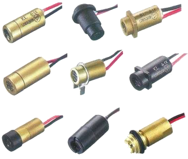

En este tema aprenderemos a utilizar el módulo láser.
(1) x Placa Arduino
(1) x Módulo Láser
(3) x M H cables (cables de macho a hembra)
Un diodo láser es un dispositivo similar a un LED convencional, pero que en lugar de emitir luz convencional emite un haz de láser.
Como sabemos, a diferencia de un haz de luz convencional un haz de láser avanza en línea recta. Si el
generador láser fuera perfecto y el haz estuviera en el vacío, la luz seguiría su camino hasta que
encontrara un obstáculo.
Sin embargo al avanzar en un medio gaseoso (como el aire) o líquido, el choque con sus moléculas provoca la
dispersión del haz haciendo que este se debilite progresivamente.
En el vacío el haz no es visible. Si lo vemos es, precisamente, porque colisiona con las moléculas del gas dispersando parte de la luz. El efecto es mayor, por ejemplo, en humo, lo que produce un efecto espectacular al hacer muy visible el haz.
Por otro lado ningún generador láser es perfecto, y menos aún los diodos baratos que usaremos en nuestros proyecto caseros, por lo que en realidad el haz deja de ser visible a los pocos metros en función de la calidad y la potencia del láser.
Los diodos láser son ampliamente empleados para la fabricación de punteros para presentaciones y efectos de luz en animaciones y espectáculos. También son componentes fundamentales de impresoras láser, escáneres y grabadores/reproductores de CD, DVD y Blu-Ray, entre otros.
Existen unas placas con un diodo láser rojo de 1mW, adecuadas para conectar directamente a Arduino. Son una buena opción para montajes pequeños y rápidos por su sencillez de uso. Podemos encontrar este tipo de placas por menos de 1€.
También podemos comprar directamente el diodo láser. Hay un abanico enorme de precios en función de las características del diodo. Los diodos más pequeños, de 1mW (similares a los de la placa anterior) cuestan en torno a 0.15€. Por otro lado, a grandes rasgos y generalizando mucho, los diodos láser de potencia median cuestan en torno a 1€, y los de alta potencia de 10€ en adelante.

Como consejo, no compréis láser caros (digamos más, de 10€) a fabricantes desconocidos y sin tener muy clara la calidad del diodo. Lo normal es que acabéis tirando el dinero.
De forma resumida, un láser utiliza emisión inducida para generar un haz de luz coherente espacial y temporalmente. La coherencia espacial corresponde con la capacidad de la luz para viajar con poca divergencia, mientras que la coherencia temporal indica la emisión en un rango espectral estrecho.
Para conseguir la emisión láser un diodo cuenta con una unión PN de grandes dimensiones que favorece la
emisión estimulada. Uno de las caras del cristal semiconductor es casi totalmente reflectante, mientras que
la otra deja pasar la luz parcialmente. Esto constituye una guía de ondas que amplifica la luz, que sale por
la cara parcialmente reflectante.
Adicionalmente los diodos láser disponen de una lente, o colimador, que rectifica la divergencia de la luz.
Unido al hecho de que la luz tiene un alto grado de coherencia espacial, hace que el haz sea capaz de
recorrer grandes distancias manteniendo un haz pequeño.
Existen diodos láser de todo tipo de potencia, desde los más pequeños de 1mW empleados en punteros, de 1W
utilizados, por ejemplo, para realizar grabados en madera o plástico.
Los diodos de mayor potencia necesitan un disipador de calor para que no se rompan en su funcionamiento. Aún
con disipador, normalmente no pueden estar encendidos continuamente, y hay que encenderos y apagarlos en
ciclos de unos pocos segundos.
Cuidado con los diodos de alta potencia. Con potencias superiores de 50mW es obligatorio el uso de gafas protectoras. El simple reflejo en cualquier superficie que provoque el contacto con la retina puede causar una pérdida permanente de visión.
Los diodos láser disponen de un alto grado de monocromaticidad, existiendo diodos que emiten luz en diversos colores, rojo, verde, azul y violeta.
También encontramos diodos láser con distintas formas de haz en función de la óptica que integran. Lo más habitual es un haz de tipo puntero, pero también podemos lineales o de múltiples puntos simultáneos.
Una vez efectuado todo el cableado, descargaremos el script del siguiente
enlace y lo cargaremos como hemos
aprendido.
En el ejemplo veremos como hacer funcionar un diodo láser.
Ahora vamos a montar nuestro diodo láser sobre un motor de cualquier tipo (servo, paso a paso, etc) para hacer un faro.
Para ello, programaremos nuestro faro para que cada 30 segundos realice un barrido sobre un ángulo de 90º y cada vez que llegue a uno de los extremos se apagará el laser hasta que tenga que volver a encenderse para hacer el siguiente barrido.
Volver al índice